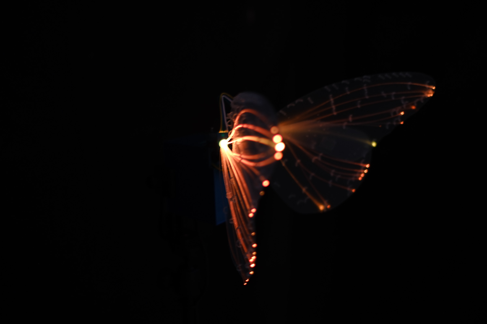
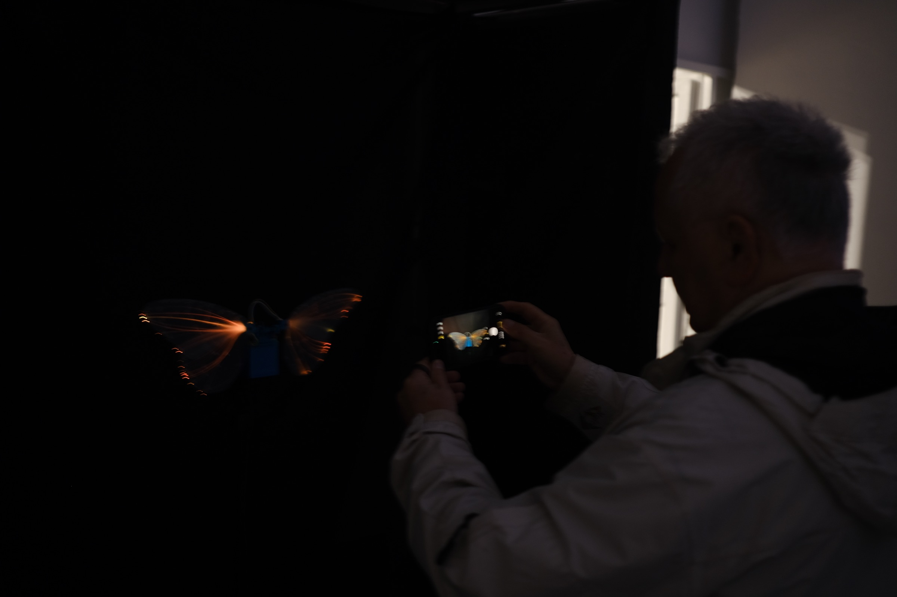
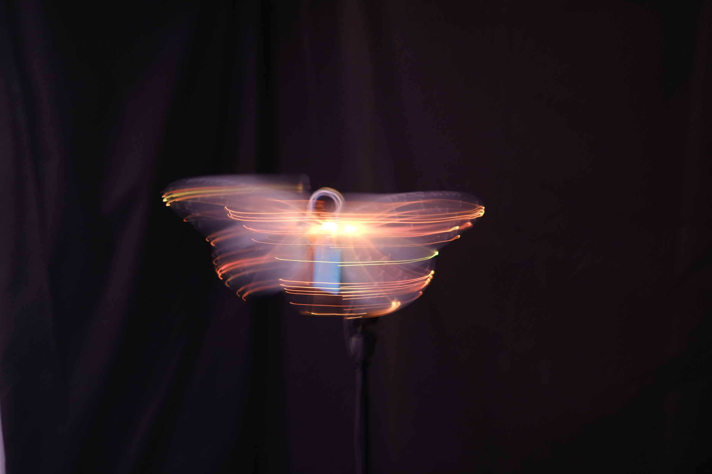
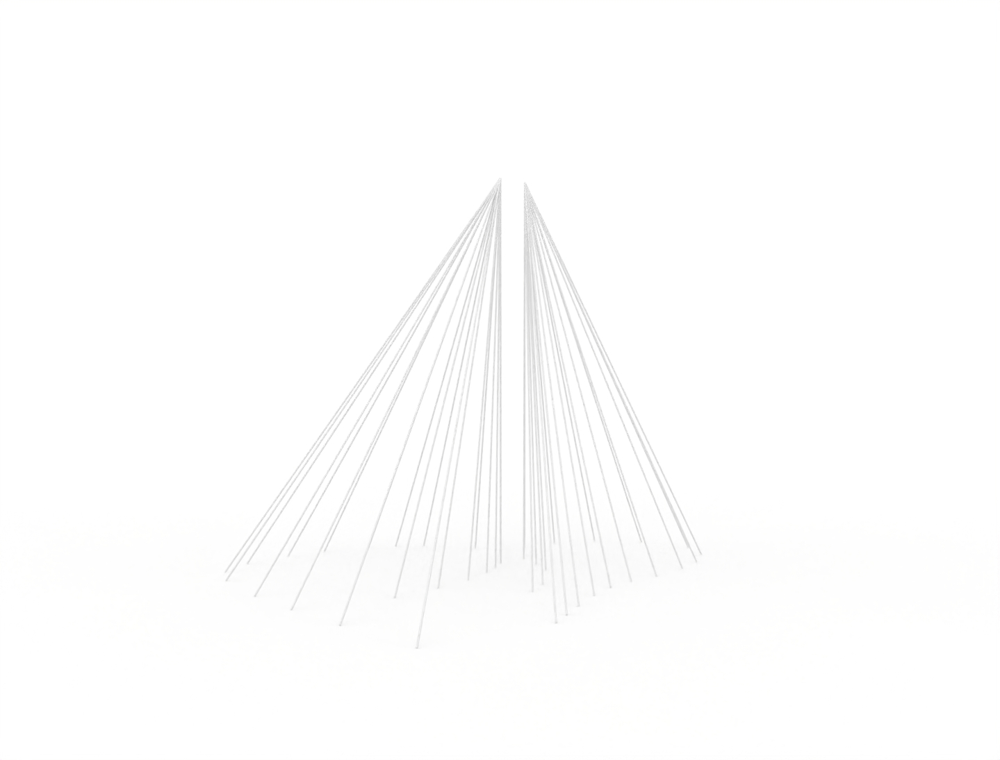

Light
Programmable illumination moves through the transparent wing structures, translating imperceptible biochemical and affective processes into changing colour, rhythm, and intensity.
Large-scale kinetic light + sound installation
The work
A suspended architecture of monarch butterflies becomes a living field of light, sound, and motion.
Polytope of Synthetic Emotions is a large-scale installation composed of kinetic monarch butterfly sculptures held within a spatial network of fine wires. Each butterfly acts as a luminous, moving node in a larger computational body.
Light traces changing internal states across the wings. Sound gives form to transmission and feedback. Movement passes through the suspended field, making the installation appear to breathe, gather, and disperse around its audience.
Rather than illustrating a single recognizable emotion, the work asks how affect might emerge between bodies, environments, and machines. Emotion is encountered here as a relation: distributed, atmospheric, and continually in formation.

Fig. 01 / Spatial visualization
The audience enters a transparent emotional body drawn in points, vectors, pulses, and flight.
Material language
Programmable illumination moves through the transparent wing structures, translating imperceptible biochemical and affective processes into changing colour, rhythm, and intensity.
A spatial sound field gives presence to neural transmission, hormonal flow, and feedback. Signals are heard not as a score laid over the work, but as part of its collective behaviour.
Kinetic wings respond as individual bodies and as a swarm. Their movement makes each synthetic state physical, fragile, and contingent on the activity of the whole system.



Suspension system
The installation is organized through a custom-designed suspension system. Fine wires descend from a central rig and open into a conical spatial volume, positioning the kinetic sculptures at different heights and distances. The structure remains visually permeable: less a container than a set of forces holding the work in relation.



Spatial study
“An ephemeral room drawn by luminous vectors.”
The wire system gives the work a boundary without enclosing it. Bodies can move around and beneath the luminous field, encountering the installation from multiple positions as its pattern continually changes.
Research context
Polytope of Synthetic Emotions is the large-scale material realization of Corpus Hormē, an ongoing research-creation project investigating emotion as an embodied, relational, and environmentally contingent process.
The project brings monarch environmental rhythms into dialogue with human endocrine regulation and computational artificial life. It does not attempt to reproduce the lived experience of another species. Instead, it uses light, sound, motion, and code to create conditions from which synthetic affect can emerge.
Explore the full research poster